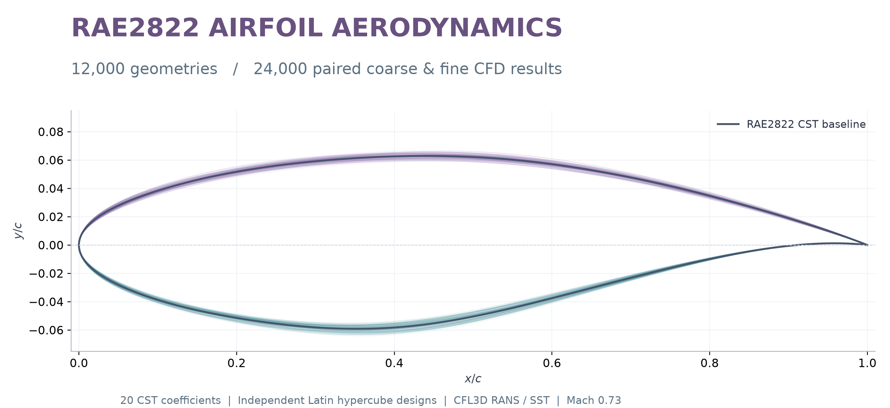

AERODYNAMICS · DATA · MACHINE LEARNING
From airfoil geometry
to aerodynamic prediction.
A reproducible comparison of a multilayer perceptron and exact isotropic Kriging in a 20-dimensional CST design space.

Loading verified experiment records…
LIVE MODEL INFERENCE / RUNS IN YOUR BROWSER
Predict your airfoil.
Enter 20 CST coefficients or surface coordinates. The released MLP calculates lift, drag and their ratio locally; optionally compare the trained Kriging model. No account, GPU service or paid API is needed.
Fixed condition: Mach 0.73 · Re 6,500,000 · angle of attack 2.79° · CFL3D fine labels
Enter your geometry or load an example.
Purple: model-input CST shape. Teal dots: normalized coordinates, when supplied. Both axes use the same geometric scale.
| Quantity | MLP prediction | Kriging prediction |
|---|
Surrogate predictions at the fixed flow condition above. Aerodynamic error requires an independent CFD or experimental reference. Coordinate-fit errors measure geometry only.
Model-input CST coefficients
Coordinate fitting and model scope
The CST class function is x0.5(1−x), with a degree-9 Bernstein polynomial per surface and closed leading/trailing edges. Coordinate acceptance limits are surface RMSE ≤0.0005 c and maximum deviation ≤0.002 c. These are engineering checks on geometry, not aerodynamic error bounds. A good fit does not imply that an unrelated airfoil lies in the RAE2822 training domain. Finite trailing-edge thickness is not silently removed. Your input is processed locally and is not uploaded; only model assets are downloaded.
01 / INTERACTIVE AIRFOIL EXPLORER
Inspect a test geometry.
Choose one of the 1,500 test cases. The shape is reconstructed from its CST coefficients. Values below are saved predictions from the 10,000-sample, seed-11 models.
Normalized coordinates; equal horizontal and vertical geometric scales. Purple: selected airfoil. Dashed gray: baseline.
| Quantity | Fine CFD label | MLP | MLP APE | Kriging | Kriging APE |
|---|
CST coefficients · U0–U9, L0–L9
Saved test predictions are compared with fine CFD labels. APE is the absolute percentage error. CL/CD is calculated from the two predicted coefficients.
02 / DATA AND PREDICTIVE ACCURACY
How does accuracy change with data?
Both axes are logarithmic. Points are means of three paired records; hover or focus a point for values and between-record standard deviation. At 10,000 samples, Kriging records reuse one canonical fit.
Read the metric definitions
MAPE = (100/N) Σ |(prediction − CFD label) / CFD label|. E₂ = 50 × (RMSECL/sCL,test + RMSECD/sCD,test). The standard deviations use the same test labels for all models. E₂ is a normalized error, not a mean relative error.
03 / EXPERIMENTAL CONTEXT
One design domain. One flow condition.
The data
CFL3D fine-mesh labels at Mach 0.73, Reynolds number 6.5 million and angle of attack 2.79°. Independent Latin hypercube pools share the same parameter bounds. Paired coarse labels are also available on Hugging Face.
The models
MLP: 20–64–64–64–2 with Tanh and a linear branch. Kriging: independent CL/CD outputs with exact isotropic Matérn-5/2 covariance and training-likelihood hyperparameter fitting.
The interpretation
Results describe these two pipelines and CFD labels in this domain. All budgets have 500 additional validation labels. The evaluation pool has prior research exposure. The CFD-generation platform is not distributed.